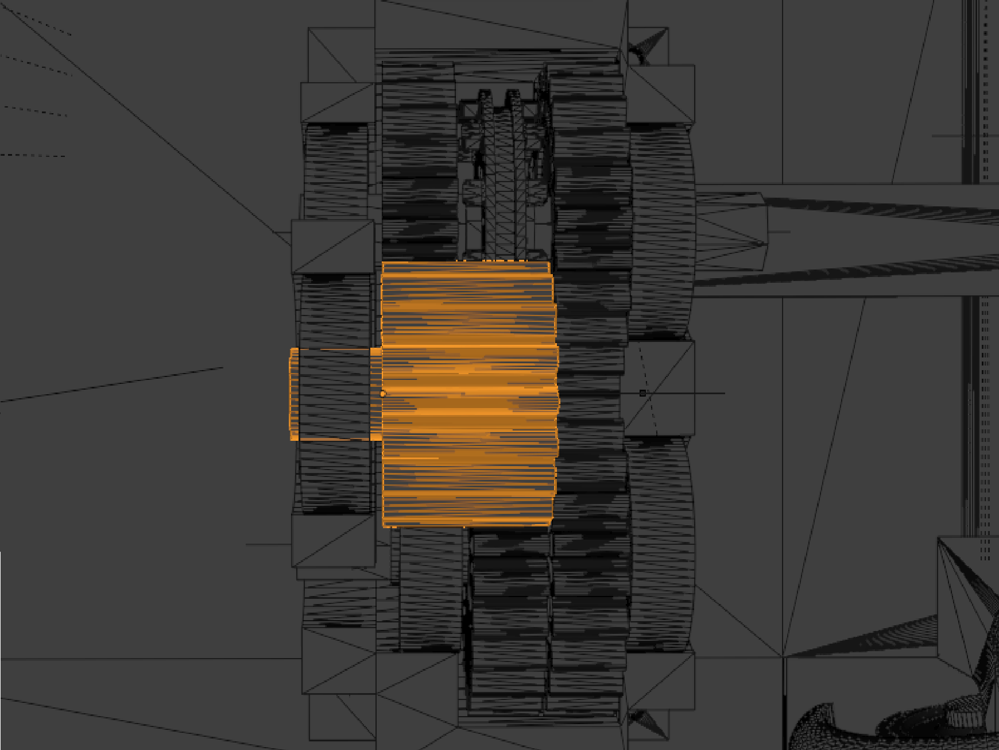
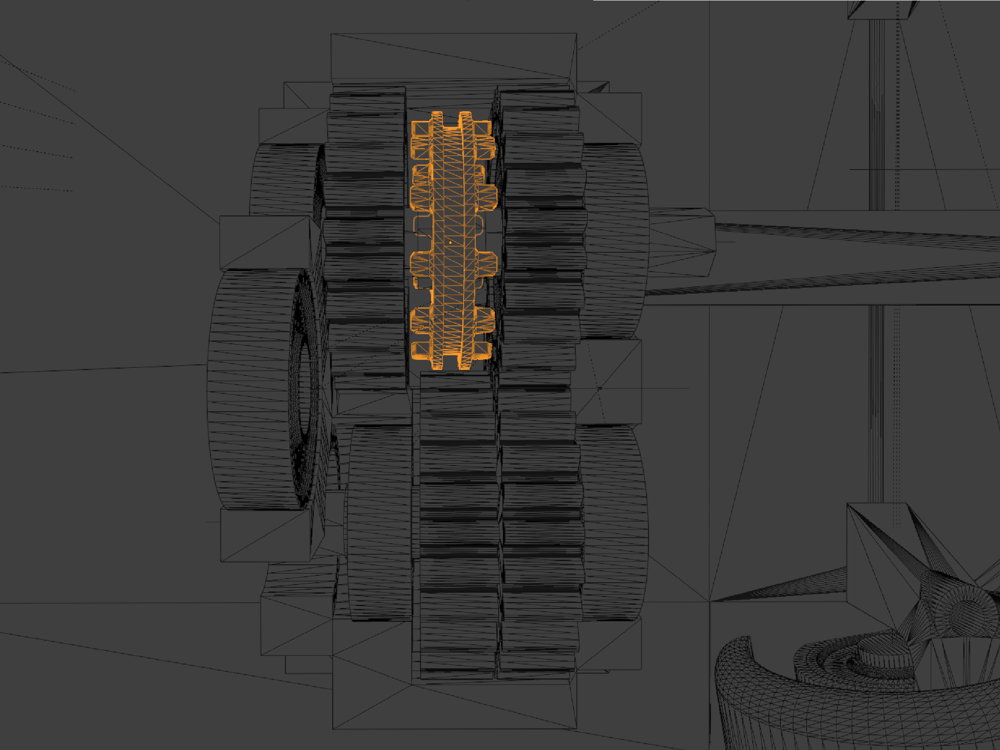

Technical Specifications & Engineering Blueprint
Back to Project Overview| Component | Gears |
|---|---|
| Method Used | Resin Printing/FDM printing |
| Unique Feature | Extreme Pricision |


The design utilized the advantages of resin printing for the clutch and gear to manage extreme precison. This combination was critical for performance in gear changing.